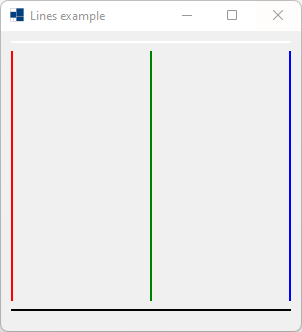
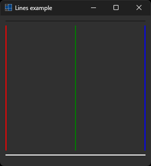
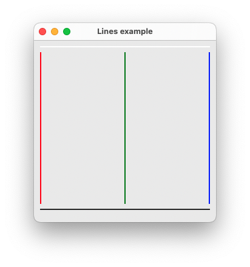
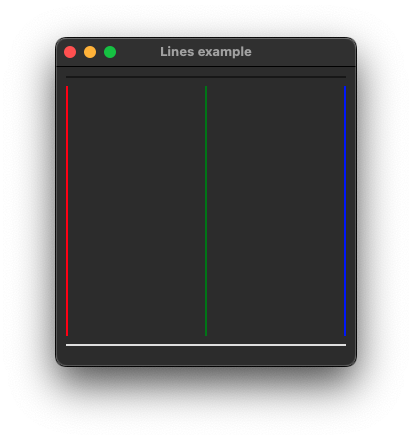
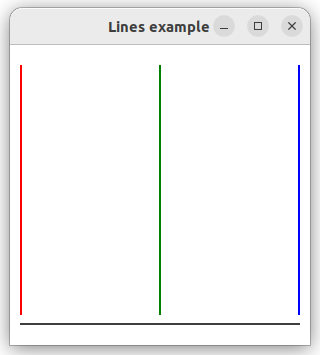
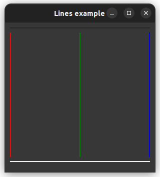

|
xtd
0.2.0
|
line.cpp
demonstrates how to create a custom control with xtd::forms::user_control control.
- Windows
- 

- macOS
- 

- Gnome
- 

#include <xtd/drawing/system_colors>
#include <xtd/forms/application>
#include <xtd/forms/form>
#include <xtd/forms/user_control>
using namespace xtd;
using namespace xtd::forms;
namespace line_example {
public:
void color(const drawing::color& color) {back_color(color);}
drawing::color color() const {return back_color();}
};
public:
form1() {
line_separator.bounds({10, 10, 280, 2});
line_red.bounds({10, 20, 2, 250});
line_green.color(drawing::color::green);
line_green.bounds({149, 20, 2, 250});
line_blue.color(drawing::color::blue);
line_blue.bounds({288, 20, 2, 250});
line_separator2.color(drawing::system_colors::control_text());
line_separator2.bounds({10, 278, 280, 2});
text("Lines example");
client_size({300, 300});
controls().push_back_range({line_separator, line_red, line_green, line_blue, line_separator2});
}
private:
colored_line line_separator;
colored_line line_red;
colored_line line_green;
colored_line line_blue;
colored_line line_separator2;
};
}
auto main()->int {
application::run(line_example::form1 {});
}
static const xtd::drawing::color green
Gets a system-defined color that has an ARGB value of 0xFF008000. This field is constant.
Definition: color.h:211
static const xtd::drawing::color red
Gets a system-defined color that has an ARGB value of 0xFFFF0000. This field is constant.
Definition: color.h:400
static const xtd::drawing::color blue
Gets a system-defined color that has an ARGB value of 0xFF0000FF. This field is constant.
Definition: color.h:85
static xtd::drawing::color control_text()
Gets a xtd::drawing::color structure that is the color of text in a 3-D element.
static xtd::drawing::color window()
Gets a xtd::drawing::color structure that is the color of the background in the client area of a wind...
static void run()
Begins running a standard application message loop on the current thread, without a form.
const xtd::drawing::color & color() const noexcept override
Gets the color is used to add foreground effects to the text.
xtd::forms::style_sheets::control user_control
The user_control data allows you to specify the box of a user_control control.
Definition: user_control.h:23
xtd::forms::style_sheets::control form
The form data allows you to specify the box of a form control.
Definition: form.h:21
@ text
The xtd::forms::status_bar_panel displays text in the standard font.
The xtd::forms namespace contains classes for creating Windows-based applications that take full adva...
Definition: about_box.h:13
The xtd namespace contains all fundamental classes to access Hardware, Os, System,...
Definition: system_report.h:17
Generated on Sun Oct 1 2023 07:46:01 for xtd by Gammasoft. All rights reserved.